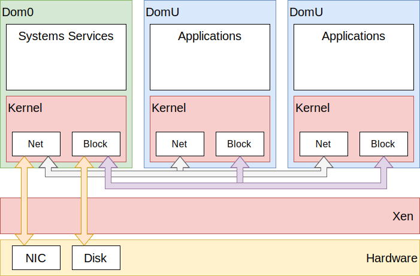

Introduction¶
Xen is an open source, bare metal hypervisor. It runs as the most privileged piece of software, and shares the resources of the hardware between virtual machines.
In Xen terminology, there are domains, commonly abbreviated to dom, which are identified by their numeric domid.
When Xen boots, dom0 is automatically started as well. Dom0 is a virtual machine which, by default, is granted full permissions 1. A typical setup might be:
Dom0 takes the role of control domain, responsible for creating and managing other virtual machines, and the role of hardware domain, responsible for hardware and marshalling guest I/O.
Xen is deliberately minimal, and has no device drivers 2. Xen manages RAM, schedules virtual CPUs on the available physical CPUs, and marshals interrupts.
Xen also provides a hypercall interface to guests, including event channels (virtual interrupts), grant tables (shared memory), on which a lot of higher level functionality is built.
Footnotes
- 1
A common misconception with Xen’s architecture is that dom0 is somehow different to other guests. The choice of id 0 is not an accident, and follows in UNIX heritage.
- 2
This definition might be fuzzy. Xen can talk to common serial UARTs, and knows how to drive various CPU internal devices such as IOMMUs, but has no knowledge of network cards, disks, etc. All of that is the hardware domains responsibility.